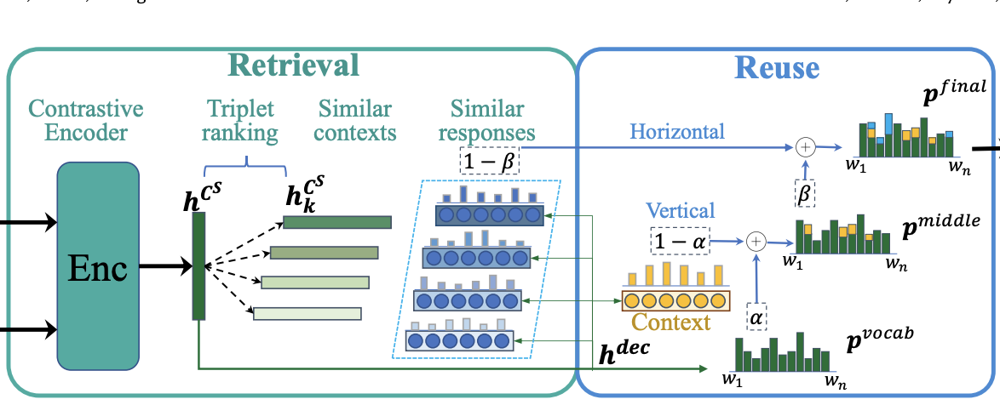
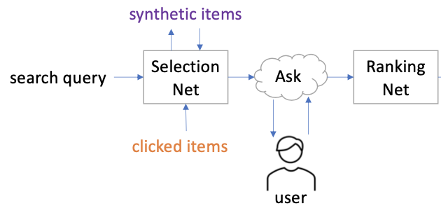
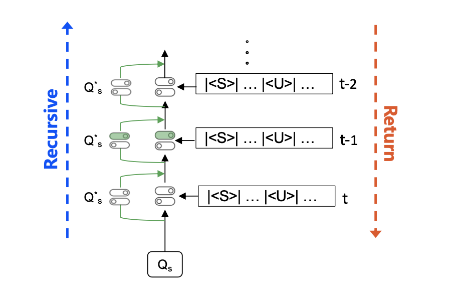
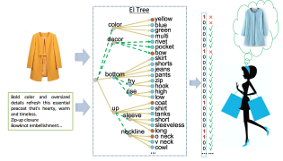
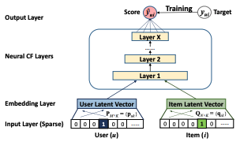

 |
Reflecting on Experiences for Response Generation |
|
Structured and Natural Responses Co-generation for Conversational Search |
 |
Learning to Ask Critical Questions for Assisting Product Search |
|
State Graph Reasoning for Multimodal Conversational Recommendation |
|
MMConv: An Environment for Multimodal Conversational Search across Multiple Domains |
 |
Multi-domain Dialogue State Tracking with Recursive Inference |
|
Towards Enriching Responses with Crowd-sourced Knowledge for Task-oriented Dialogue |
|
Topic-Guided Relational Conversational Recommender in Multiple Domains |
|
Dialogue State Tracking with Incremental Reasoning |
|
Neural Multimodal Belief Tracker with Adaptive Attention for Dialogue Systems |
|
Knowledge-aware Multimodal Dialogue Systems (Best Paper Final List) |
 |
Interpretable Multimodal Retrieval for Fashion Products |
|
Attributed Social Network Embedding |
 |
Neural Collaborative Filtering |

Lizi Liao
Email: lzliao at smu dot edu dot sg
Office: SCIS2-4056
Office: SCIS2-4056